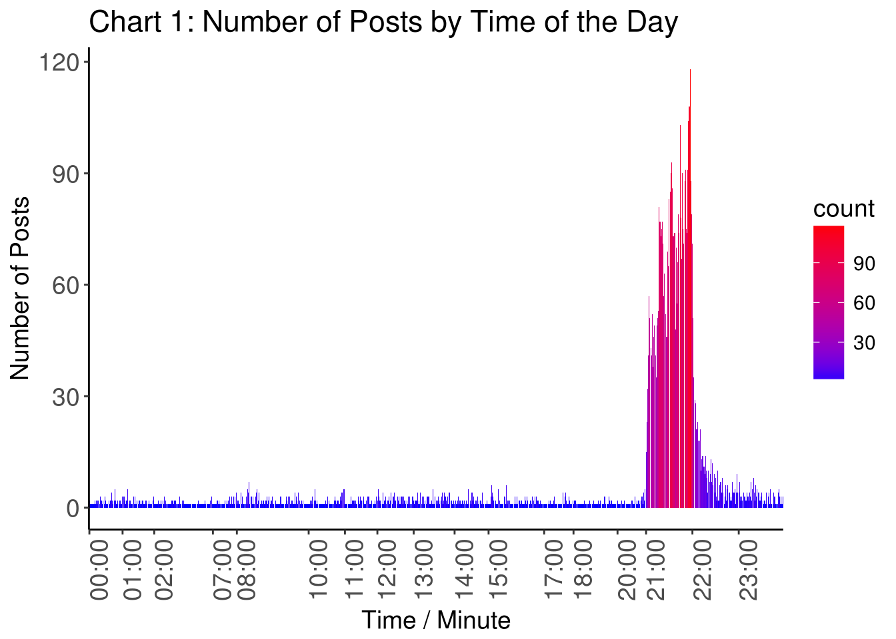
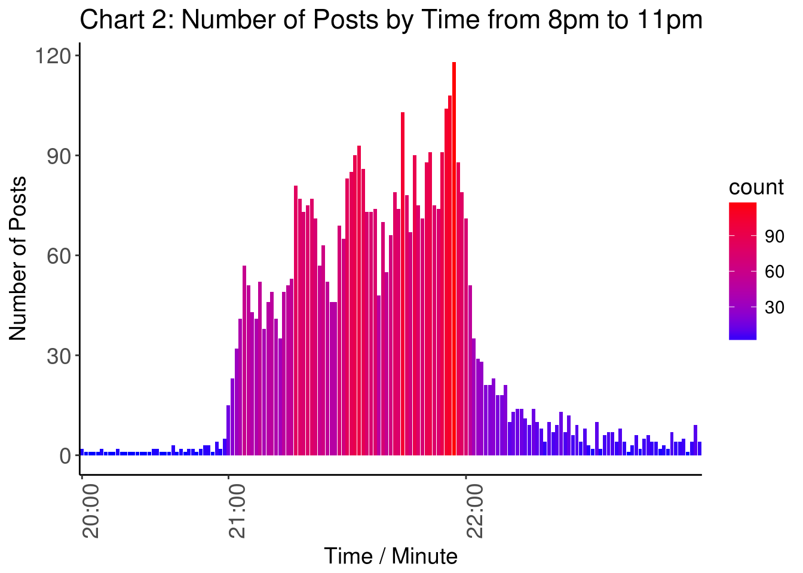
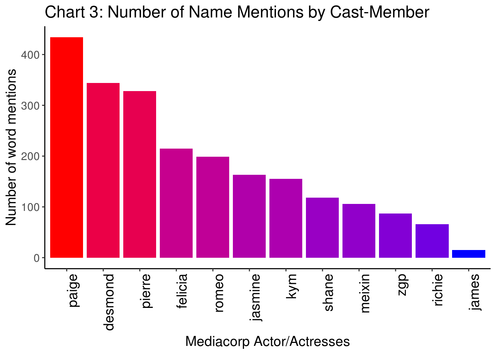
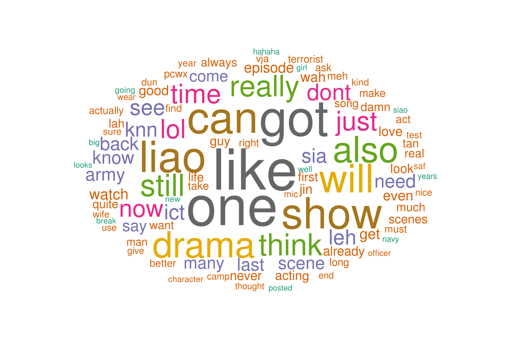

Alright. I realised that my first post wasn’t supposed to be online, so I had to remove it for good reasons. Anyhow, I’m still keen on getting my first official data science post up, so here we go!
To start off, I need to introduce some facts about myself. I not too recently got married, got my own house, and my own television. This gave me quite a bit of freedom as to what I wanted to watch after I come home from work each day (particularly as parents always have first choice on what show is screening on the family tv).
I must also admit that my mandarin isn’t particularly strong despite coming from a bilingual education system, given that english has always been the main form of communication in my life. Hence, to ensure that I do not lose sight of my mother tongue, I thought it would be good practice to spend some time watching TV shows in Chinese. Naturally, mediacorp’s channel 8 9pm prime time slot comes to mind (as this is the time that I will definitely be home after work)
So I got hooked at a time when they were showing When Duty Calls, a show sponsored by MINDEF & MHA to commemorate 50 years of national service. Honestly, I thought that the show provided quite a bit of entertainment value, and the idea of national service very easily resonates with majority of us Singaporeans.
However, beyond the show, I was also interested to find out what Singaporeans thought of this show. In this instance, one could think of no better source than HardwareZone’s EDMW. Soon, I found out that there is an official dedicated thread for this show. So I thought, why not put this thread through some data work and see what I could get!
The data that I collected were the individual posts, and the timing of these postings. If you are interested, the official link can be found here.
The first thing I thought we would be interested to find out is: when do people post? From the chart below, we can see the huge cluster of posts that happen when the show starts. Well, this is not really surprising, as we find little reason for people to be on this hardwarezone thread at any other time of the day. We can also see that the number of comments start to pick up as we approach the end of the show, and slowly tapers off past 10pm-ish. Well, that’s about bedtime for most people, so I guess its appropriate that the number of posts go down too.

For easier viewing, I also have a zoomed-in version of the number of posts by time starting from just before the show starts to just after it ends. The zoomed-in version provides an additional interesting analysis. Can you spot when the advertisement breaks are?

If you had taken a look at the wikipedia link that I had shared above, you would likely to have noticed that the cast of this TV show is relatively solid. But us as humans also have a tendency to pick our favorites, and I would suppose that in our conversations with others about the show, it is natural for us to talk more frequently about our favourite cast. Aggregated across an entire community, we can then find out which of the cast members is the fan favourite!
Make a guess? Who amongst the cast members do you think would be the most popular? (Do not peek!)

Well, I’m sure there’s nothing stopping you from scrolling down to take a look. Anyhow, if you follow the local media scene, I’m sure you would be rougly familiar with Paige Chua, who has come in top as our fan favourite cast member for “When Duty Calls”. Following close behind is Desmond Tan, who (as I just read from Wikipedia) has a fan club called Destanation and is considered one of the 8 Dukes of Mediacorp. Pierre Png, well you all should know who he is right. He came in third.
Lastly, I thought it would also be interesting to find out which are the most commonly words that are used in the thread. What I did was to parse each post (usually in sentences or at least phrases) into words, following which, for each word, I counted the number of occurances of each word, and summed up across the entire thread. As I am typing this, I realise I should have explained this earlier when finding out who the most popular cast member was, but I’m a little too lazy to backtrack, so… nevermind!
In the word cloud, the size of the word reflects the number of occurances of that particular word, i.e. the larger the word, the more frequently it was used. I wouldn’t be spending time to talk much about the wordcloud. I think that it is rather self-explanatory, and I hope you have a good laugh when you encounter some “familiar” words :).

Hope you enjoy my first official post!